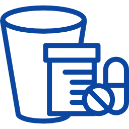

<div class="contenido">
  <encabezado></encabezado>
  <section class="icon-admin">
      
      
      
  </section>
  <!--nav>
      <ul class="nav-item">
        <li class="item"><a class="item-link" href="#/usuarios/list">Lista de Usuarios</a></li>
        <li class="item"><a class="item-link" href="#/funcionarios/create">Registrar Funcionario</a></li>
        <li class="item"><a class="item-link" href="#/funcionarios/list">Lista De Funcionario</a></li>
        <li class="item"><a class="item-link" href="#/auditacitas">Auditoria De citas</a></li>
        <li class="item"><a class="item-link" href="#/auditahorarios">Auditoria De Horarios</a></li>
        <li class="item"><a class="item-link" href="#/auditausuarios">Auditoria de Usuarios</a></li>
      </ul>
    </nav>


  <div class="Boton">
    <nav class="Primero">
      <ul class="uno nav nav-pills nav-stacked">
        <li class="botones">
          <a href="#/cups/create" class="enlace">Parametrizar Cups</a>
        </li>
        <li class="botones">
          <a href="#/ocupaciones/create" class="enlace">Parametrizar Ocupaciones</a>
        </li>
        <li class="botones">
          <a href="#/cexternas/create" class="enlace">Parametrizar Causas Externas</a>
        </li>
        <li class="botones">
          <a href="#/entidades/create" class="enlace">Parametrizar Entidades</a>
        </li>
        <li class="botones">
          <a href="#/consultorios/create" class="enlace">Parametrizar Consultorios</a>
        </li>
        <li class="botones">
          <a href="#/clinicas/create" class="enlace">Parametrizar Clinicas</a>
        </li>
        <li class="botones">
          <a href="#/sedes/create" class="enlace">Parametrizar Sedes</a>
        </li>
        <li class="botones">
          <a href="#/peratiende/create" class="enlace">Parametrizar Personal Atiende</a>
        </li>
        <li class="botones">
          <a href="#/pertratante/create" class="enlace">Parametrizar Personal Tratante</a>
        </li>
        <li class="botones">
          <a href="#/tiantecedentes/create" class="enlace">Parametrizar Tipos de Antecedentes</a>
        </li>
        <li class="botones">
          <a href="#/antecedentes/create" class="enlace">Parametrizar Antecedentes</a>
        </li>
      </ul>
    </nav>
  </div-->

</div>
<piepagina/>
